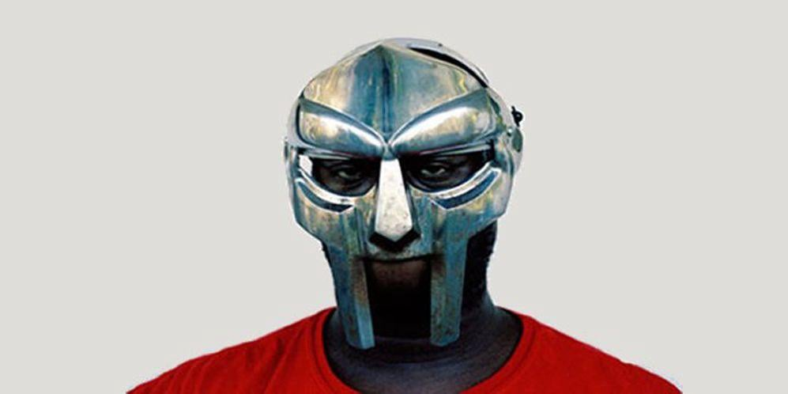

MF Doom
Born: 13 July 1971
Years Active: 1988–1993, 1997–2020
Died: 31 October 2020
Age: 49
Genre/s: East Coast hip-hop, alternative hip-hop, underground hip-hop, jazz rap
Label/s: Metal Face, Fondle 'Em, Stones Throw, Nature Sounds, Lex, Rhymesayers, Elektra
Member of: KMD, Monsta Island Czars, Madvillain, Danger Doom, DOOMSTARKS, JJ Doom, NehruvianDoom
Daniel Dumile (born Dumile Daniel Thompson; July 13, 1971 – October 31, 2020), also known by his stage name MF Doom or simply Doom (both mostly stylized in all caps), was a British and American rapper, songwriter, and record producer. Noted for his intricate wordplay, signature metal mask, and "supervillain" stage persona, he became a major figure of underground hip hop and alternative hip hop in the 2000s, and has been widely regarded as one of the greatest and most influential lyricists in underground rap.
Dumile was born in London and raised in Long Beach, New York. He began his career in 1988 as a member of the trio KMD, performing as Zev Love X. The group disbanded in 1993 after the death of his brother DJ Subroc. After a hiatus, Dumile reemerged in the late 1990s. He began performing at open mic events while wearing a metal mask resembling that of the Marvel Comics supervillain Doctor Doom, who is depicted on the cover of his 1999 debut solo album Operation: Doomsday. He adopted the MF Doom persona and rarely made unmasked public appearances thereafter.
During Dumile's most prolific period, the early to mid-2000s, he released the acclaimed Mm..Food (2004) as MF Doom, as well as albums released under the pseudonyms King Geedorah and Viktor Vaughn. Madvillainy (2004), recorded with the producer Madlib under the name Madvillain, is often cited as Dumile's magnum opus and is regarded as a landmark album in avant-garde hip hop. Madvillainy was followed by another acclaimed collaboration, The Mouse and the Mask (2005), with the producer Danger Mouse, released under the name Danger Doom.
Though he lived most of his life in the United States, Dumile never naturalized as a U.S citizen and struggled to obtain lawful permanent residency. In 2010, after returning from an international tour for his sixth and final solo album, Born Like This (2009), the United States Department of Homeland Security denied him entry and found him "unlawfully present", forcing him to return to England. Dumile worked mostly in collaboration with other artists during his final years, releasing albums with Jneiro Jarel (as JJ Doom), Bishop Nehru (NehruvianDoom), and Czarface (Czarface Meets Metal Face, and the posthumous Super What?). In 2020, he died in a Leeds hospital from angioedema following a reaction to a blood pressure medication. After his death, Variety described him as one of hip hop's "most celebrated, unpredictable and enigmatic figures".